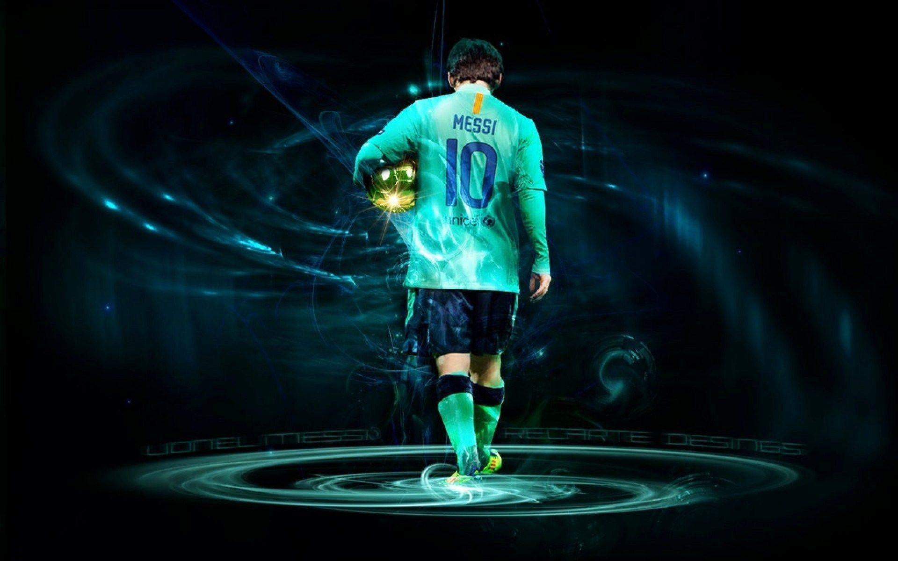

responsive web design isnt the programing language or a javascript.
making the design avabalibe for the phone, tablets, laptops and the proper design.
it can be done using html amd css
VIEW PORT
The users visiable area of the web pages.
before phones and tablets, it was only designed for the laptops and computers.
in coming days with RWD it was made stable to moblies and tablets.
HTML5 has given the method to the web designers to control over the view port.
GRID VIEW
Many web pages are designed into bty grid veiw which means the pages are divided into the coloumns.
Using grid view is very useful on the pages it makes the elements to be easier to be placed on the on the pages.
responsive grid view was 12 coloumns and 100% of the width which resizes the design as per the need.
MEDIA QUERY IS THE TECHINQUE INTRODUCED IN CSS3 FOR THE RESPONSIVE DESINGS
RWD IMAGES
A paragraph is a series of related sentences developing a central idea, called the topic. Try to think about paragraphs in terms of thematic unity: a paragraph is a sentence or a group of sentences that supports one central, unified idea. Paragraphs add one idea at a time to your broader argument.
